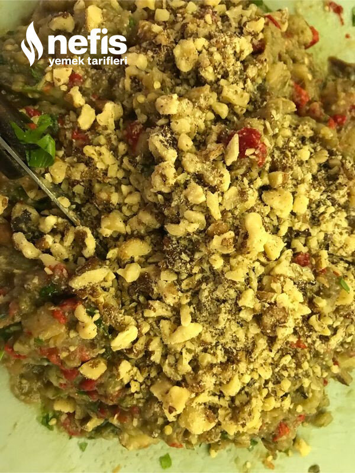

🍽️ 6-8 kişilik⏱️ Hazırlık: 20 dk🔥 Pişirme: 20 dk🏷️ Salata & Meze & Kanepe🏷️ Meze Tarifleri
Malzemeler
- 3 -4 adet patlıcan
- 2-3 adet kırmızı kapya biber
- 1 tutam maydanoz
- 1 çay bardağı kıyılmış ceviz içi
- 1 su bardağı süzme yoğurt
- 3-4 yemek kaşığı tahin
- 1 -2 diş sarımsak
- Tuz
- 3-4 yemek kaşığı zeytinyağı
- 1 su bardağı haşlanmış nohut
- 1 çay kaşığı kimyon
- 1 çay kaşığı karabiber
- 1 çay kaşığı toz kırmızı biber
- Tuz
Hazırlanışı
- Patlıcan ve biberleri üzerine delikler açarak yağlı kağıt serilmiş tepside közlüyoruz.
- Közlenen patlıcanları poşette 5-6 dakika bekleterek( kolay soyulması için) kabuklarını soyuyoruz.
- Patlıcan ve biberleri ince ince kıyıyoruz.
- Maydanozları da ince ince kıyarak patlıcan, biber karışımına ilave ediyoruz.
- Cevizleri de ilave ederek, birbirine özdeşleşmesi için biraz daha hepsini birlikte kıymaya devam ediyoruz.
- Başka bir kasede yoğurt, tahin, ezilmiş sarımsak ve tuzu karıştırıyoruz.
- Yoğurt karışımına patlıcanlı karışımı ekleyerek karıştırıyoruz.
- Servis edeceğimiz kabımıza alıyoruz.
- Üzerine 2-3 kaşık zeytinyağı gezdiriyoruz.
- Diğer yandan tavamıza 3-4 kaşık zeytinyağı ilave ederek ocağa alıyoruz.
- Nohutları ilave ederek 6-7 dakika kavuruyoruz.
- Baharatları ve tuzu ilave ederek ocağı kapatıyoruz.
- Kavrulan nohutu köz patlıcan karışımını istediğimiz şekilde ilave ederek süslüyoruz.Afiyet olsun 😊.